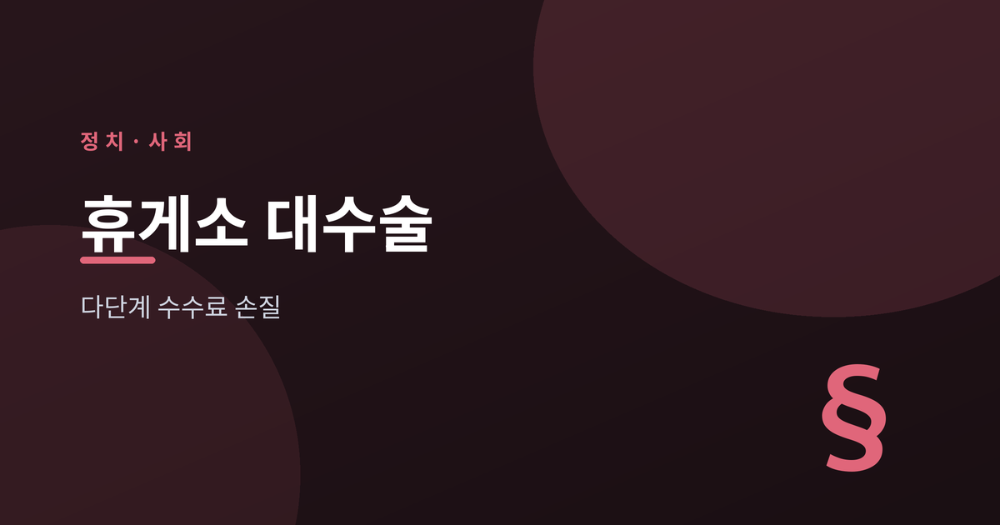
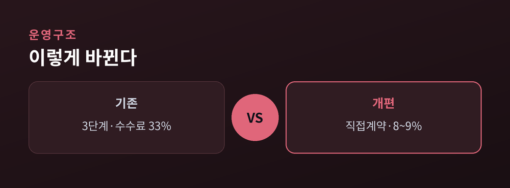
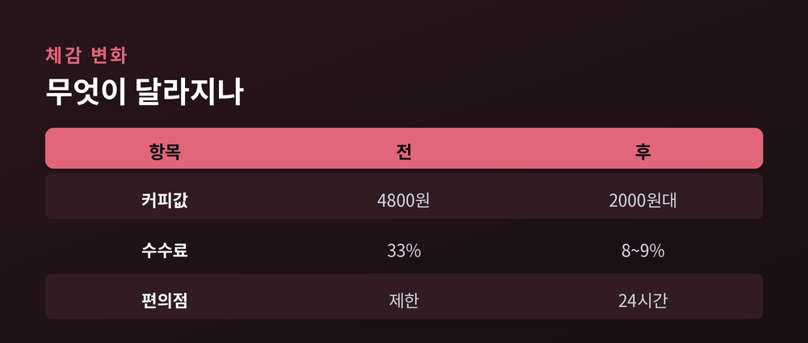
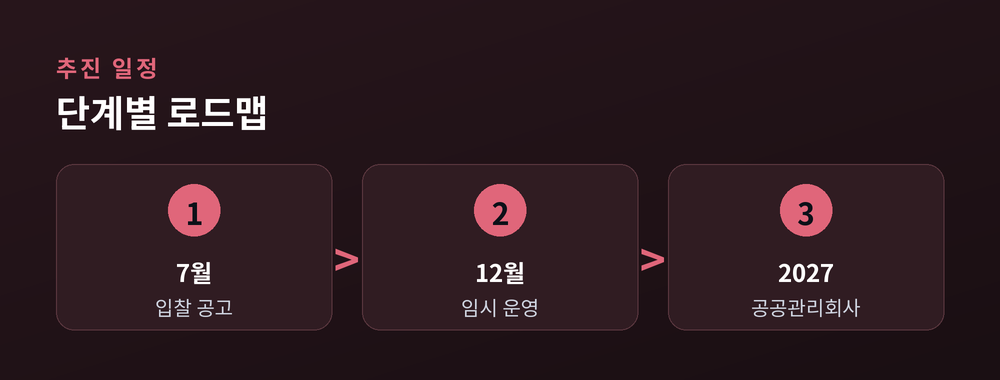
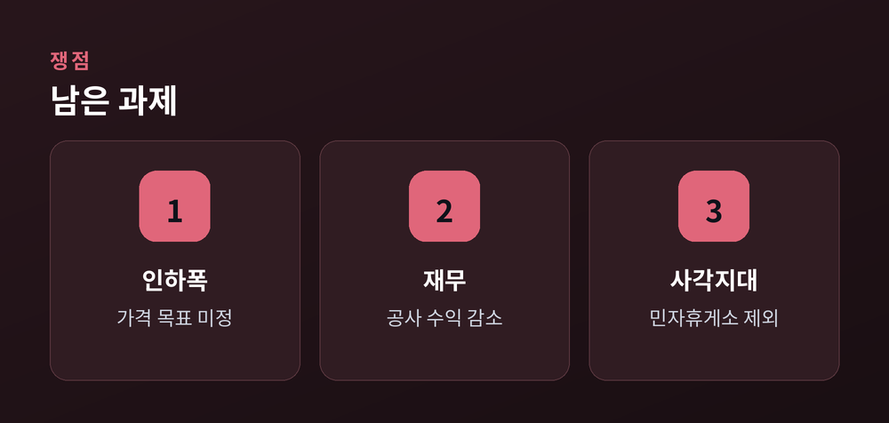

33% 수수료 걷어내 음식값 낮춘다

고속도로 휴게소 하면 흔히 '비싸고 맛없다'는 인상이 따라붙습니다. 명절이나 휴가철 장거리 운전 중에 들른 휴게소에서 커피 한 잔, 국수 한 그릇 값을 보고 놀란 경험은 많은 분이 공유하고 계실 겁니다. 정부가 바로 이 오래된 불만을 정면으로 겨냥한 개편안을 내놨습니다.
국토교통부는 2026년 7월 9일 홍지선 제2차관 브리핑을 통해 고속도로 휴게소 운영 구조를 손보는 개편방안을 발표했습니다. 핵심은 음식값을 밀어 올려 온 다단계 임대 구조를 없애고, 입점업체가 내는 수수료를 대폭 낮추겠다는 것입니다. 다만 실제로 얼마나 싸질지, 어떤 기준으로 업체를 뽑을지는 아직 확정되지 않아 실효성을 둘러싼 논의도 함께 시작됐습니다. 이번 글에서는 무엇이 바뀌는지, 왜 이런 구조가 생겼는지, 그리고 남은 쟁점은 무엇인지 차분히 짚어 보겠습니다.
국토부가 발표한 개편안의 뼈대는 '중간 단계 제거'입니다. 지금까지 휴게소는 한국도로공사가 중간운영업체와 운영권 임대계약을 맺고, 그 중간운영업체가 다시 입점업체와 상가 계약을 맺는 구조였습니다. 정부는 이 구조를 공공관리회사가 입점업체와 직접 계약하는 방식으로 바꾸겠다고 밝혔습니다.
이 과정에서 입점업체가 부담하던 수수료는 매출액 대비 평균 33%, 최대 51%에 달했는데, 개편 후에는 임대료가 8~9% 수준으로 낮아질 것으로 국토부는 전망했습니다. 정부는 줄어든 비용이 음식값 인하와 서비스 개선으로 이어지도록 하겠다는 구상입니다. 홍 차관은 "입점업체가 내는 임대료는 그동안 음식값에 반영돼 국민에게 돌아갔다"고 설명했습니다.

휴게소 음식이 비쌌던 근본 원인은 '누가 더 높은 임대료를 써내느냐'로 업체를 뽑아 온 방식에 있습니다. 높은 수수료를 감당한 업체가 자리를 얻으니, 그 부담은 결국 소비자 가격에 얹혔습니다. 중간에서 새는 비용이 클수록 손님이 내는 값도 올라가는 구조였던 셈입니다.
정부는 앞으로 선정 기준을 가격이 아니라 음식 맛·가격·서비스 수준 중심으로 바꾸겠다고 밝혔습니다. 외부심사위원회 평가를 거쳐 업체를 뽑고, 매년 평가로 서비스를 관리한다는 방침입니다. 눈에 띄는 변화도 예고됐습니다. 그동안 높은 임대료 탓에 들어오기 어려웠던 저가 커피 매장을 유치해 현재 평균 4,800원 수준인 아메리카노를 2,000원 이하로 낮추고, 편의점 24시간 운영, 도시락·김밥·컵라면 등 간편식 판매도 확대하겠다는 내용입니다.

이번 개편에는 이른바 '전관예우' 고리를 끊는 내용도 담겼습니다. 국토부는 도로공사 현직자와 퇴직 3년 이내 인사, 그 배우자와 직계가족을 휴게소 입점 입찰에서 배제하기로 했습니다. 도로공사 퇴직자 단체인 도성회와 자회사도 앞으로 휴게소 사업에 참여할 수 없습니다.
현재 자회사 등을 통해 운영 중인 휴게소 6곳은 매각 절차를 거쳐 조기 철수하도록 할 계획입니다. 홍 차관은 "휴게소는 그동안 전관 관리의 사각지대였다"며 관련 경력 직원의 재취업까지 강하게 모니터링하겠다고 밝혔습니다. 오랫동안 지적돼 온 '이권 구조'를 제도적으로 차단하겠다는 취지입니다.
전국 200여 개 휴게소가 한꺼번에 바뀌는 것은 아닙니다. 기존 계약이 끝나야 새 체계로 전환할 수 있기 때문입니다. 우선 적용 대상은 신설되는 합천호(상·하행)와 월출산, 계약이 종료되는 여주·군위·장유·대천(상·하행) 등 8곳입니다. 도로공사가 7월 중 입찰 공고를 내고 12월부터 새 운영방식을 적용합니다.
운영 주체가 될 공공관리회사는 2027년 초 설립을 목표로 하되, 그 전까지는 도로공사가 임시로 직접계약을 맡습니다. 국토부는 현재 최장 10년인 계약이 순차적으로 끝나면서 2030년까지 전체 휴게소의 80~90%가 새 기준으로 전환될 것으로 내다봤습니다.

기대가 큰 만큼 신중론도 있습니다. 우선 가격이 실제로 얼마나 내려갈지는 아직 정해지지 않았습니다. 국토부는 줄어든 비용을 음식의 질을 높이거나 양을 늘리거나 가격을 낮추는 데 쓰겠다는 방향만 제시했습니다. 즉 수수료가 내렸다고 값이 자동으로 일률 인하되는 구조는 아니어서, 서비스 개선에 무게가 실릴 경우 소비자가 느끼는 가격 인하 효과는 제한적일 수 있다는 지적이 나옵니다. 맛·서비스 평가 기준도 이달 말에야 확정될 예정입니다.
다른 한편에서는 도로공사의 재무 부담을 걱정하는 시각도 있습니다. 휴게소 임대·수수료 수익이 공사 수익성에서 적지 않은 비중을 차지하기 때문입니다. 이에 대해 국토부는 지난해 기준 휴게소 임대수익이 2,000억~3,000억 원, 순수익은 700억~800억 원 규모여서 "임대료 인하만으로 공사 재무 전반이 크게 흔들리지는 않을 것"이라며, 공공기관인 만큼 수익을 극대화하기보다 국민에게 환원하는 것이 맞다고 설명했습니다. 협약 구조상 정부 방침을 강제하기 어려운 민자도로 휴게소가 개편의 사각지대로 남는다는 점도 과제로 꼽힙니다.

정리하면, 이번 개편은 오랜 불만이었던 휴게소 가격과 서비스 구조를 제도적으로 손본다는 점에서 방향성 자체에는 공감이 넓습니다. 다만 실제 체감으로 이어지려면 가격 인하 목표와 평가 기준이라는 '빈칸'을 어떻게 채우느냐가 관건입니다. 12월 첫 적용 휴게소에서 소비자가 어떤 변화를 느끼는지가 이번 정책의 성패를 가늠하는 첫 시험대가 될 전망입니다.
참고: 뉴스핌, 아시아투데이, 서울경제, ZDNet Korea, 대한민국 정책브리핑